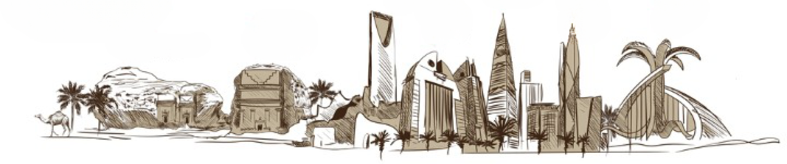

نشأة الدولة السعودية
نشأت الدولة السعودية الثانية خلال الفترة من 1824م وحتى 1891م، بعد انقضاء الحملات العثمانية وما خلفته من آثار، والتي لم تؤثر على ولاء أهل المنطقة لأسرة آل سعود حيث قام الأمير تركي بإعادة بناء دولة سعودية ثانية عاصمتها الرياض تقوم على ما قامت عليه السعودية الأولى من مقومات.
